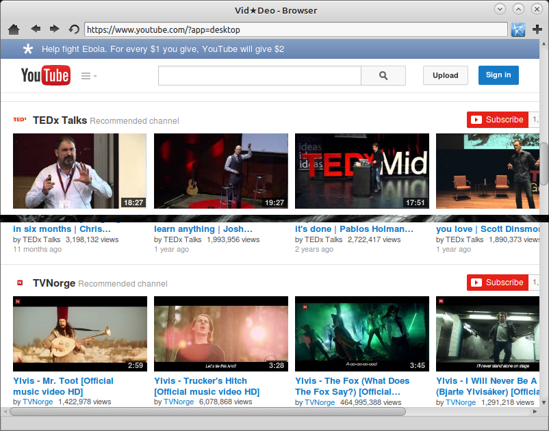

Vid-Deo A Video Downloading Client.
With vid-Deo you can download videos from sites such as YouTube, Colbert Report, South Park, and more.
Currently to get Vid-Deo you have to clone from Github like so.
$ git clone https://github.com/infektedpc/Vid-Deo.git
You Need the Gambas 3.5 runtime or higher in Ubuntu and derivatives you can use the "Ubuntu Gambas Maintainers Team" repo to install it
$ sudo add-apt-repository ppa:gambas-team/gambas3
$ sudo apt-get update
$ sudo apt-get install gambas3-runtime
$ sudo apt-get install gambas3Screenshots
Vid-Deo Main Interface: You can paste in links build a huge list and download till your eyes bleed.
With Vid-Deo's Built in browser you can add videos by going to a video then selecting the add video button at top of the browser.

Vid-Deo's Downloading Interface:
Authors and Contributors
Thanks To @pest121 and @infektedpc For Contributing To the project. Others are more than welcome to Join Us.
Support or Contact
Having trouble? contact infektedpc@gmail.com or dev-fire@gmx.com and we’ll help you sort it out.